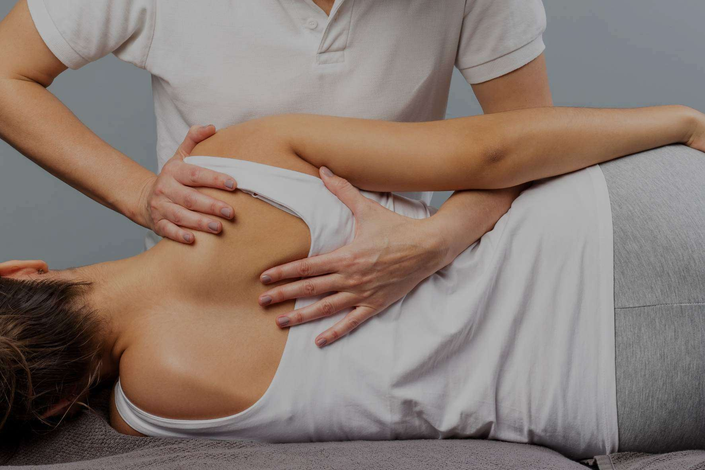
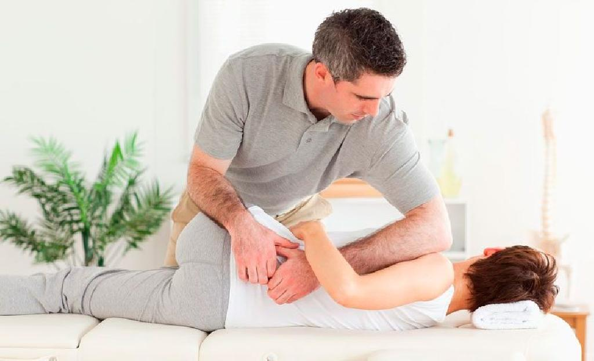

Osteopatia é um sistema autônomo de cuidados de saúde primário, que se baseia no diagnóstico diferencial, bem como no tratamento de várias disfunções e prevenção da saúde, sem o auxílio de fármacos ou cirurgia. A Osteopatia enfatiza a sua ação centrada no paciente, ao invés do sistema convencional centrado na doença. A Osteopatia utiliza várias técnicas terapêuticas manuais entre elas a da manipulação do sistema musculoesquelético (ossos, músculos e, articulações) para ajudar no tratamento de doenças. Na prática, os tratamentos da osteopatia estão enfocados em dores nas costas, pescoço e demais articulações.
A liberação miofascial consiste na mobilização desse tecido'com aplicação de pressão sobre os pontos gatilho, com o objetivo de relaxamento muscular, melhorar a qualidade do movimento, reduzir as dores e restaurar a funcionalidade e amplitude do movimento. Indica-se esse tratamento para casos de: posturas inadequadas por grandes períodos, alterações posturais instaladas. fatores ocupacionais, tensões do dia-a-dia, questões emocionais, overtraining, sedentarismo, fibromialgia, síndrome da dor miofascial,envelhecimento precoce, entre outros. A avaliação pode ser feita através da Termografia Clínica onde podemos verificar as áreas de maior sobrecarga e tensão muscular, destacando de forma mais objetiva, e demonstrando em tempo real quais segmentos corporais estão mais comprometidos. A técnica permite ajustar o alinhamento muscular, restaurando o movimento de todos os tecidos moles e sua textura, resistência e função dos tecidos moles.
A Quiropraxia se dedica ao diagnóstico, tratamento e prevenção de problemas do sistema neuro-músculo-esquelético, ou seja, das articulações, músculos, tendões, ossos, nervos e outras estruturas responsáveis pelo movimento do corpo, bem como os efeitos destas alterações sobre a saúde em geral. No tratamento quiroprático são utilizadas técnicas manuais que buscam ajustar o sistema articular para reduzir o risco de lesões e diminuir as dores. É possível que, durante o processo, ocorram pequenos estalos em consequência das manobras que são realizadas para restabelecer a harmonia corporal do paciente.
A fisioterapia para coluna pode ajudar a reduzir a dor nas costas, melhorar o movimento e a função das articulações e dos músculos. O tratamento, que muitas vezes ocorre em conjunto com outros métodos, como medicamentoso e acupuntura, também ajuda a evitar posições e movimentos inadequados, de modo a reduzir as chances de machucar as costas novamente. Exite uma ampla gama de técnicas terapêuticas para amenizar dores nas costas, além de oferecer orientação sobre como cuidar da coluna e evitar movimentos e posturas prejudiciais a essa estrutura.
Programa terapêutico preventivo é uma abordagem que tem como objetivo ajudar a prevenir o surgimento de doenças e problemas com o corpo. Muito usada por atletas e idosos, ela também pode ser facilmente adaptada para qualquer idade, já que a função principal é proporcionar uma vida com mais qualidade e saúde. Pode ser uma ferramenta poderosa ao complementar as atividades físicas. Além disso, também é muito recomendada no ambiente de trabalho, pois minimiza os riscos de acidentes. A característica mais importante do Programa terapêutico preventivo é a sua fácil adaptação à realidade da pessoa, respeitando as suas limitações, necessidades e riscos. O tratamento identifica as fraquezas que o indivíduo possui, focalizando cada uma delas.